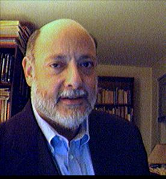

STEPHEN P. STEINBERG
Brief Professional Biography
As of February 1, 2003
Dr. Stephen P. Steinberg is currently Executive Director of the Penn
National Commission on Society, Culture and Community, and its national program
on public discourse and community, the Penn Public Talk Project.Ý Comprised of 48 leading scholars, political
figures, and shapers of public opinion from the U.S. and abroad, the Commission
was conceived and convened under the leadership of University of Pennsylvania
President Judith Rodin and Dr. Steinberg to explore
the alleged deterioration of public culture and political discourse, the
failures of leadership, and their impact on the fragmentation of American
communities.Ý Since 1990, Dr. Steinberg
has also served as Assistant to the
President at the
In
1997-98, he directed the 21st Century
Project for the Undergraduate Experience, Penn's strategic initiative to
enhance undergraduate education, coordinating major innovations in
undergraduate curriculum, interdisciplinary studies, student services,
residential living, information technology, and inter-school collaboration, and
served as a member of the Council of
Undergraduate Deans.Ý This culminated
more than a decade of Dr. Steinbergís central involvement with Pennís Provosts
and four undergraduate schools in efforts to enhance Pennís undergraduate
curriculum and educational experience.
Since
coming to Penn as an Assistant Dean
in the School of Arts and Sciences in
1978, Dr. Steinberg has served in a wide variety of academic administrative
capacities gaining broad experience in undergraduate and doctoral education,
continuing education and entrepreneurial masters program development, campus
cultural issues and policies, and national educational issues.Ý He has worked extensively on strategic
planning, institutional restructuring, the maintenance of educational standards
in undergraduate and doctoral programs, opening graduate study to adult and
non-traditional students, strengthening campus community and dialogue, gender
equity, racial and sexual harassment, student conduct policies, and freedom of
expression in the University community.
A
specialist in twentieth century European philosophy, Dr. Steinberg earned his
Ph.D. from Penn in 1989 and master's degrees from the New School for Social
Research (in philosophy) and Columbia University (in journalism), after
receiving his bachelor's degree "with distinction" from the
University of Michigan.Ý A Lecturer in Philosophy at Penn since
1981, he is also an active affiliated faculty member at the Solomon Asch
Center for the Study of Ethnopolitical Conflict and
the Institute for Strategic Threat
Analysis and Response.Ý His teaching,
research, and writing interests include the philosophy of nationalism; public
discourse, culture, and community; phenomenology, existentialism and
postmodernist thought; psychoanalysis; and contemporary issues in higher
education.Ý He is co-editor and a contributor
to Public
Discourse in America, to be
published by the

RESUME OF PROFESSIONAL CAREER
Executive Director, Penn National Commission on Society, Culture and Community, University of Pennsylvania, 1996-present.Ý Ý[http://www.upenn.edu/pnc]
…
Conceived, planned, and directed $2.7-million Penn
National Commission on Society, Culture, and Community project, funded by The
Atlantic Philanthropies, and comprised of 48 leading scholars, political
figures, and shapers of public opinion from the U.S. and abroad, convened under
the leadership of University of Pennsylvania President Judith Rodin to explore the alleged deterioration of public
culture and political discourse, the fragmentation of communities, and the
failures of leadership.
Interim Director, 21st
Century Project for the Undergraduate Experience, University of Pennsylvania,
1997-98. Ý[http://www.upenn.edu/provost/21st/index.html]
…
Member, Council of Undergraduate Deans, 1997-98.
…
Directed and brought to a successful conclusion Penn's strategic
initiative to enhance undergraduate education.Ý
Coordinated major innovations in undergraduate
curriculum, interdisciplinary studies, student services, residential living,
information technology, and interschool collaboration.Ý This culminated more than a decade of work
with Pennís Provosts and four undergraduate schools in efforts to enhance
Pennís undergraduate curriculum and educational experience.
Assistant to the President,
University of Pennsylvania, 1990-present.Ý
…
Senior policy analyst, writer, advisor, and staff to Penn presidents Judith
Rodin, Claire Fagin, and Sheldon Hackney, with
responsibilities for academic affairs, faculty issues and liaison,
undergraduate education, policy development, communications, campus issue
management, and national educational issues.
Lecturer, Department of
Philosophy,
…
Faculty Advisor, College of Arts and Sciences,
1990-present.
…
Affiliated Faculty, Solomon Asch Center for the Study of Ethnopolitical Conflict, 1999-present.Ý [http://psych.upenn.edu/sacsec]
…
Affiliated Faculty, Institute for Strategic Threat Analysis and Response, 2002-present.Ý [http://www.istar.upenn.edu]
Administrative Fellow,
Offices of the President and Provost, University of Pennsylvania,
1987-90.
ïÝÝÝ Coordinator, Provostís Council on
Undergraduate Education, 1987-92.
ïÝÝÝ Coordinator, Provostís Council on
Undergraduate Admissions, 1987-92.
ïÝÝÝ Coordinator, Council of Undergraduate Deans, 1987-92.
ïÝÝÝ Acting Executive Assistant to the Provost, Spring
1990.
ïÝÝÝ Coordinator, Council of Graduate Deans, 1987-90.
ïÝÝÝ Coordinator, Planning Committee on
Undergraduate Education, 1987-89.
ïÝÝÝ Coordinator, Planning Committee on Doctoral Education,
1987-89.
Assistant Dean,
ïÝÝÝ Director, Master of Arts and Professional Studies Program,
1985-87.
ïÝÝÝ Coordinator, Faculty Council on Undergraduate Education, 1986-87.
ïÝÝÝ Assistant Director for Graduate Programs and
Administration, College of General Studies, 1982-87.
ïÝÝÝ Academic and Career Advisor, College of
General Studies, 1978-87.Ý
Development Officer and
Adjunct Instructor of Humanities, Pratt Institute, New York, N.Y., 1977-78.
Account Associate, Bruce Porter Co., Inc.,
New York, N.Y., 1975-76.
Account Executive, Joseph Dermer and Assoc., Inc., New York, N.Y., 1974-75.
Staff Writer, Medical
Tribune, Inc., New York, N.Y., 1972-73.
Writer,
News Writer, WGN-TV and Radio,
EDUCATION
Ph.D., Philosophy,
…
Dissertation:Ý "Aron Gurwitsch and the
Interpretation of Husserl," a detailed
examination of Aron Gurwitsch's
inter‚pretation of Husserlís phenomenology in the
light of contemporary analytic discus‚sions of Husserl's
theory of intentionality as well as its philosop‚hical and historical
context.Ý
…
Dissertation Director: Izchak Miller.
M.A.,Ý Philosophy,
New School for Social Research, 1982.
M.S.,ÝÝ Journalism,
…
Master's Project: ìRepressive Psychiatry: The Use and Abuse of Madness
in the
A.B.,ÝÝ Philosophy,
with Distinction,
…
College Honors Program, 1967-71.Ý
…
Class Honors, 1971.
American Freedom Summer Institute,
…
College-level study in the social sciences.
CONTACT
INFORMATION
Dr. Stephen P. Steinberg
Office Phone: (215) 898-2549
Office Fax: (215) 573-6667
Email: sps@pobox.upenn.edu